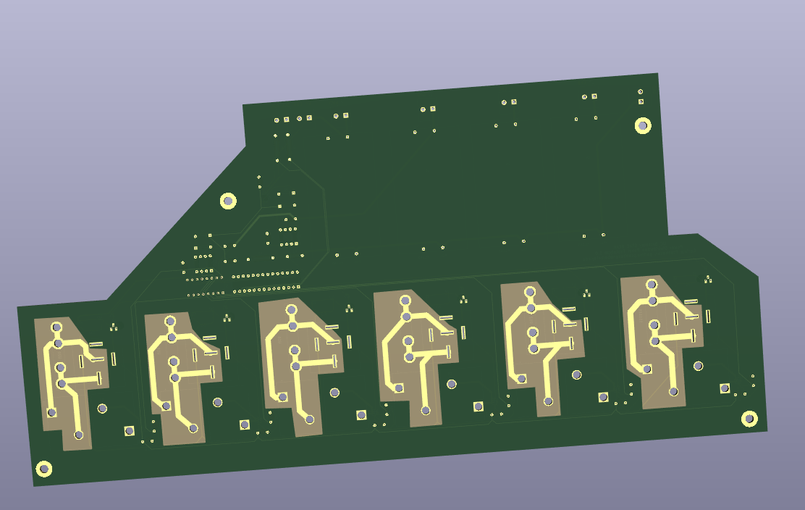

Prototype Design
Contact garima.prabhakar@berkeley.edu with any problems, preferably about the PDB prototype. STAC is designing an autonomous rover to map and detect life on moon and mars-like terrain. The motors, bio box, communications, and sensors all require power in different voltage levels and current draw. This board is a power distribution panel with current sensing that can handle up to 50 Amps of current from 12-40V on 6 busses for the drive and arm motors, as well as 4 slots for breakout DCDC converters for low power, communication, biobox, and sensor applications. This prototype is controlled with an arduino via I2C and features:
- Support for Power Supplies from 12-40V.
- Support for 6 high power busses with 50 A current draw on each bus.
- A battery voltage sensor.
- Current draw sensors on each high power bus for up to 50 A.
- An ADC for current measurements multiplexed across buses and a battery voltage measurement.
- Automotive relays to programmatically switch the power on each bus on and off.
- An overcurrent pin to switch automotive relay off as soon as the hall sensor detects an overcurrent.
- A current fuse holder for diagnostics/fuses.
- LED indicator for when relays are switched off.
- Other overcurrent/overvoltage protection fuses and diodes.
- Anticipated support for 4 programmable DCDC converters ranging from 1.75-12V output and 3A current draw on each channel.
Schematic
Below is the schematic for the prototype.
Below is the schematic for the relay/current sensor to a high power bus.
Below is the schematic for the ADC, battery sensor, CMOS multiplexer for current sensors, and GPIO expander for relay/multiplexer control.
Layout
Below is the layout for the prototype.
Below is the layout for the relay/current sensor to a high power bus.
Below is a 3D View of the front of the layout.

Below is a 3D View of the back of the layout.
Implementation
This is TBD, some components were ordered at the wrong specification and consequently the prototype is still under testing.
Reflection
I definitely should have conserved space and cost by not including the DCDC converter breakouts. Components could have been aligned to conserve space, although I was worried about thermal relief in high current areas. The actual current only travels through a small area on the board, which is 2oz copper. That area is connected with a polygonal pour, tinned heavily with solder, connected with thick copper wire, and then taped up with electrical tape. I am aware that there are several design flaws (for example, wasting a huge portion of space on the board for DCDC converter breakouts, using the currsense module to pull the relay edge low instead of switching a MOSFET to do it for me, or the thermal relief vs. conserving space issue, or the use of different planes across the board, or clearances with parts, smart design, etc.), and this stuff will be refined in later, less time-constrained iterations.
CONTACT
Email: garima.prabhakar@berkeley.edu